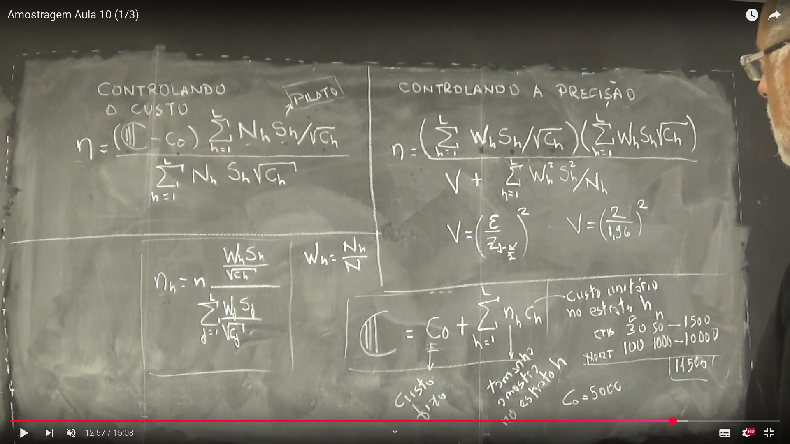
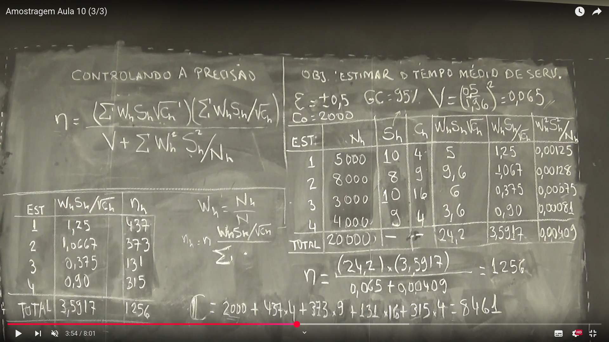

Amostragem Aleatória Estratificada
Semana 9
Aula 01 - Alocação ótima na Amostragem Aleatória Estratificada
🔧 Controlando o custo
\[ \eta = \frac{ \left( \mathbb{C} - C_0 \right) \sum_{h=1}^{L} N_h S_h \sqrt{C_h} }{ \sum_{h=1}^{L} N_h S_h \sqrt{C_h} } \]
ou seja,
\(\eta_h\) pode ser alocada proporcionalmente a:
\[ \eta_h = n \cdot \frac{ \frac{W_h S_h}{\sqrt{C_h}} }{ \sum_{j=1}^{L} \frac{W_j S_j}{\sqrt{C_j}} } \]
Controlando a precisão
\[ \eta = \frac{ \left( \sum_{h=1}^L W_h S_h \sqrt{C_h} \right) \left( \sum_{h=1}^L \frac{W_h S_h}{\sqrt{C_h}} \right) }{ V + \sum_{h=1}^L \frac{W_h^2 S_h^2}{N_h} } \]
em que:
\[ V = \left( \frac{\varepsilon}{Z_{1 - \alpha/2}} \right)^2 \]
Cálculo do custo total
\[ \mathbb{C} = C_0 + \sum_{h=1}^{L} n_h C_h \]
- \(C_0\) = custo fixo total
- \(n_h\) = tamanho da amostra no estrato \(h\)
- \(C_h\) = custo unitário no estrato \(h\)
Quadro da aula: 
Aula 02 - Amostragem Estratificada com Controle de Custo
Objetivo da Aula
Estimar a área média plantada, controlando o custo da amostragem.
Custo total
Suponha: - \(C = R\$ 10.000\) (orçamento total) - \(C_0 = R\$ 3.000\) (custo fixo/piloto)
O custo disponível para a coleta de dados é: \[ C - C_0 = R\$ 7.000 \]
🧪 Fórmulas para determinação de tamanho amostral ótimo
A fórmula usada para obter o tamanho total da amostra (\(n\)), sob controle de custo, é:
\[ \eta = \frac{(C - C_0) \sum_{h=1}^L N_h S_h \sqrt{C_h}}{\left( \sum_{h=1}^L N_h S_h / \sqrt{C_h} \right)^2} \]
Componentes:
- \(N_h\): Tamanho do estrato \(h\)
- \(S_h\): Desvio padrão do estrato \(h\)
- \(C_h\): Custo por unidade amostral no estrato \(h\)
- \(\eta\): tamanho ótimo total da amostra
- \(n_h\): tamanho da amostra no estrato \(h\)
- \(W_h = \frac{N_h}{N}\): peso do estrato \(h\)
- \(W_h \cdot S_h / \sqrt{C_h}\): ponderador do estrato \(h\) na alocação ótima
Exemplo aplicado (dados da lousa):
| Estrato | \(N_h\) | \(S_h\) | \(C_h\) | \(N_h S_h / \sqrt{C_h}\) | \(N_h S_h \sqrt{C_h}\) |
|---|---|---|---|---|---|
| 1 | 1500 | 10 | 3 | 8660,25 | 25.580,76 |
| 2 | 2000 | 15 | 3 | 17320,51 | 51.961,52 |
| 3 | 2500 | 20 | 6 | 20442,41 | 122.474,49 |
| 4 | 4000 | 5 | 3 | 8944,27 | 44.721,36 |
| Total | 10000 | — | — | 55327,45 | 245.138,13 |
Cálculo final do tamanho amostral ótimo:
\[ \eta = \frac{(10000 - 3000) \cdot 55327,45}{245138,13} = \frac{387292,15}{245138,13} \approx \boxed{1581} \]
Alocação da amostra por estrato
A alocação ótima é feita via:
\[ n_h = \eta \cdot \frac{W_h S_h / \sqrt{C_h}}{\sum_{h=1}^L W_h S_h / \sqrt{C_h}} \]
Com valores:
| Estrato | \(W_h S_h / \sqrt{C_h}\) | \(n_h\) |
|---|---|---|
| 1 | 0,8660 | 247 |
| 2 | 1,73205 | 495 |
| 3 | 2,04124 | 583 |
| 4 | 0,89443 | 256 |
| Total | 5,53372 | 1581 |
Verificação do custo total:
\[ \text{Custo total} = C_0 + 247 \cdot 3 + 495 \cdot 3 + 583 \cdot 6 + 256 \cdot 5 = 10.000 \]
Tudo bate com o orçamento.
Quadro da aula: Quadro da aula 02 - Semana 9
{kind=link}
Aula 03 - Amostragem Estratificada com Controle de Precisão
Objetivo da Aula
Estimar o tempo médio de serviço com controle da precisão.
Parâmetros de precisão
- Erro amostral admissível: \(\varepsilon = \pm 0{,}5\)
- Nível de confiança: \(95\%\)
- Valor crítico: \(z_{0{,}975} = 1{,}96\)
- Variância desejada: \[ V = \left( \frac{0{,}5}{1{,}96} \right)^2 = 0{,}065 \]
Fórmula para o tamanho ótimo da amostra com controle de precisão
\[ \eta = \frac{ \left( \sum_{h=1}^L W_h S_h \sqrt{C_h} \right) \left( \sum_{h=1}^L \frac{W_h S_h}{\sqrt{C_h}} \right) }{ V + \sum_{h=1}^L \frac{W_h^2 S_h^2}{N_h} } \]
Componentes:
- \(W_h = \frac{N_h}{N}\): peso do estrato
- \(C_h\): custo por unidade amostral
- \(S_h\): desvio padrão do estrato
- \(V\): variância desejada
- \(\eta\): tamanho total da amostra
- \(n_h\): alocação ótima por estrato
Fórmulas auxiliares (da lousa):
- Média estratificada estimada: $$ ### Teste
Etapas seguintes: Estimando a média e o intervalo de confiança
Após determinar o tamanho da amostra \(n\), alocamos as unidades entre os estratos, obtendo \(n_h\) por:
\[ n_h = n \cdot \frac{W_h S_h / \sqrt{C_h}}{\sum \left( W_h S_h / \sqrt{C_h} \right)} \]
Em seguida, realizamos a coleta da amostra em campo e aplicamos as fórmulas abaixo.
Estimador da média estratificada
\[ \bar{y}_{st} = \sum W_h \bar{y}_h \]
Onde:
- \(\bar{y}_h\) é a média da amostra do estrato \(h\),
- \(W_h\) é o peso do estrato.
Estimativa da variância da média estratificada
\[ V(\bar{y}_{st}) = \sum \left( \frac{W_h^2 S_h^2}{n_h} \right)\left(1 - \frac{n_h}{N_h} \right) \]
Se a amostragem for com reposição ou \(N\) for muito grande, o termo \(\left(1 - \frac{n_h}{N_h}\right)\) pode ser desprezado.
Intervalo de confiança
\[ \bar{y}_{st} \pm t \cdot \sqrt{V(\bar{y}_{st})} \]
Onde:
- \(t\) é o valor crítico da distribuição \(t\) de Student (ou normal, para grandes amostras),
- \(\sqrt{V(\bar{y}_{st})}\) é o erro padrão da estimativa.
Apêndice – Interpretação da Variância e do Desvio Padrão
- A variância mede a dispersão dos dados ao redor da média, elevando os desvios ao quadrado.
- O desvio padrão é simplesmente a raiz quadrada da variância.
Em outras palavras:
O desvio padrão mede, em média, o quanto os dados se afastam da média do conjunto.
Se o desvio padrão for:
- Pequeno → os dados estão próximos da média (pouca dispersão).
- Grande → os dados estão muito espalhados em relação à média (muita dispersão).
Essa medida é essencial para entender a confiabilidade das estimativas feitas com base em uma amostra.
Quadro da aula: 